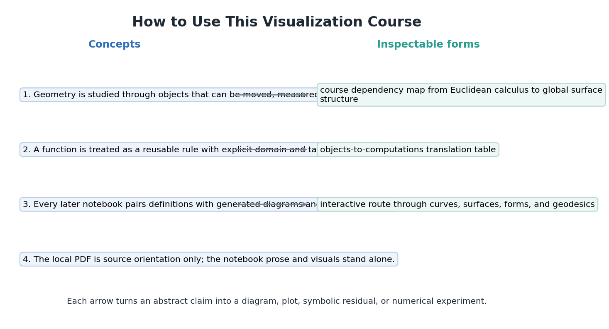
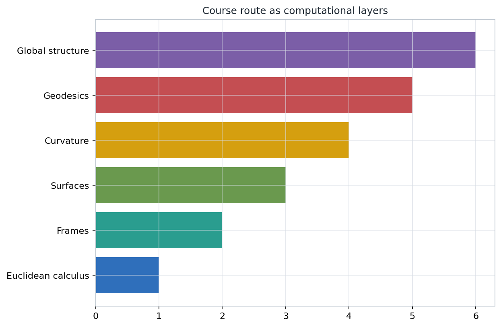
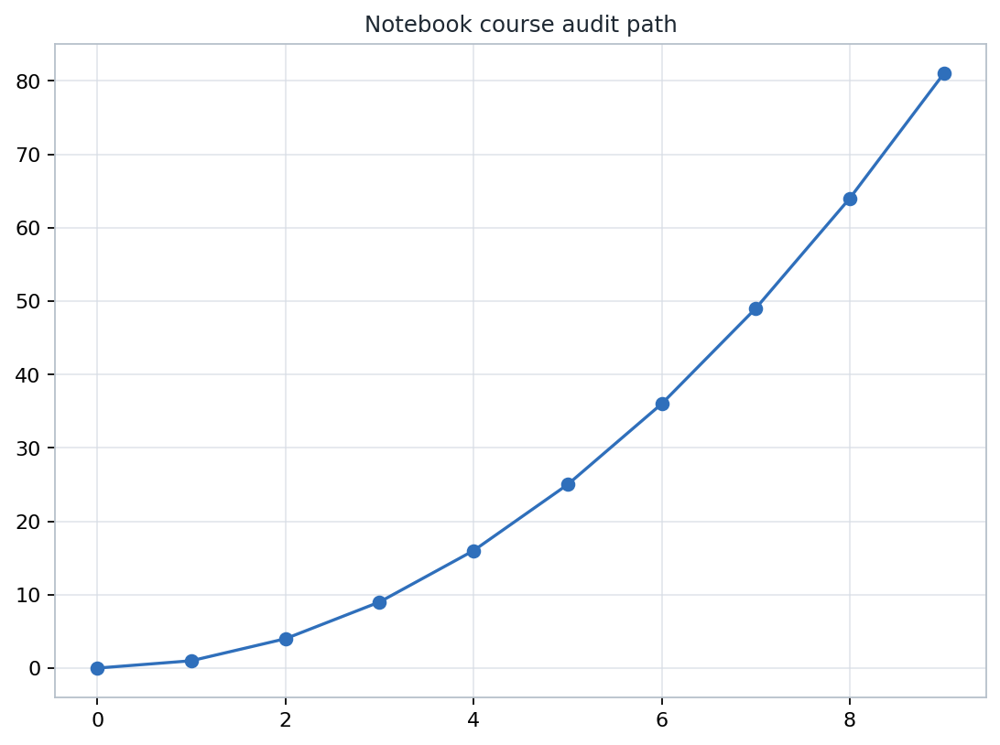

Definitions become inspectable objects: data, movement, measurement, and checks.
Source grounding. Printed pages 1-2; PDF pages 16-17.
part-00-orientation/introduction/00-how-to-use-this-course.ipynb
Name the object as computable data: domain, target, coordinates, parameters, and assumptions.
Choose a drawing or interaction that makes the relevant geometry visible without pretending the drawing is the proof.
Save a residual, tolerance, invariant, or file audit so the artifact has mathematical evidence attached.
The source span fixes the boundary: printed pages 1-2 and PDF pages 16-17.
The deck records provenance, not dependency on an open PDF.
The notebook supplies original explanations, generated visuals, executable examples, and saved checks.
A reader should be able to learn by running the course files directly.
Coordinates, arrays, sampled points, frames, and parameter values.
Change coordinates, move a frame, reparametrize, or rotate a scene.
The measurement meant to survive the allowed change.
A residual or diagnostic that catches a broken claim.
A function has a domain, a target, an expression or procedure, and assumptions under which the rule is meaningful.
type
Most confusion in computational differential geometry starts when data from one space is silently used as if it belonged to another.
Coordinates in a chart or ambient space.
A base point plus an allowed direction.
A rule that eats tangent data and returns a measurement.
A moving instrument for decomposing vectors.
If the picture changes, which measurement was supposed to remain stable?
Pair every visual with a nearby sentence naming the invariant, behavior, or failure mode to inspect.

Follow arrows as dependency claims: later objects need earlier measurement habits.
Notice where local data becomes global structure. That transition is the course's recurring challenge.
When a later notebook feels abstract, return to the map and locate the missing prerequisite object.
What would change if the base point, direction, orientation, or sign convention were wrong?

Coordinates in a chosen chart or ambient model.
p = (u, v)
Base point plus direction in an allowed tangent space.
v_at_p
Evaluation rule for tangent input, not just a row of numbers.
omega(v)
Measured deviation from a flat or transported comparison.
residual ~= 0
Open the local interactive model after asking what a rotation should reveal.
Which feature is merely viewpoint-dependent, and which measured quantity is supposed to remain stable?
Pause before touching the model. Make the class predict what should and should not change.
chapter-checks.json
final-sanity.json
Generated paths exist, have nonzero size, and record validation values for the lesson.
A visual without a check can be persuasive while still encoding the wrong convention.
A tangent vector is drawn at one point but evaluated at another.
Partial velocities stop spanning the expected tangent plane.
A frame, normal, or orientation flips a measured quantity.
An identity expected to vanish leaves a nonzero symbolic or numeric trace.
A diagram hides behavior because the grid is too coarse or misses a boundary.
Data from one space is fed into a rule defined on another.
Variable names should tell you whether a value is a point, direction, patch, metric, form, or check.
Look for domains, parameter ranges, tolerances, and model choices before interpreting an output.
Ask which line computes the object and which line tests the claim.
A mismatch gives a new question rather than merely a wrong answer.

Which space does this object live in?
Which coordinates, parameters, or samples represent it?
Which transformations are allowed?
Which measurement is invariant or diagnostic?
Which residual or check would catch a mistake?
Every definition should be tied to data that can be computed, displayed, or tested.
A strong visual tells the learner exactly what invariant, behavior, or failure to inspect.
A formula becomes more trustworthy when a small example produces a residual or diagnostic value.